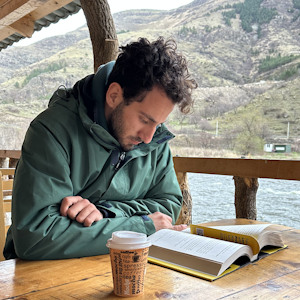
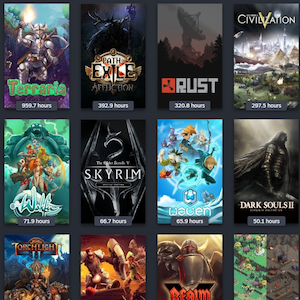

Hobbies
I love travelling. I think that
traveling, especially solo travel, is a great way to learn about the world and about yourself. I have
been to the USA, Germany, Amsterdam, Italy and England. I've also been to Thailand, Laos, Cambodia,
Vietnam and Sri Lanka.
I hope one day to be able to travel to Argentina, as well as the Galapagos Islands.

I love reading; I've been an avid Fantasy bookworm since the age of 6, and regularly read book series
spanning thousands of pages (for fun!). In recent years though, I've started reading more "professional"
books in the realm of Business and Management. A book I really enjoyed reading, which you can see in the
photo on the left, is "Fall in Love with the Problem, Not the Solution" by Uri Levine, one of the
founders of Waze and Moovit. I think that
reading is a great way to learn about the world and about yourself.

Gaming - I love to play games. I have been playing games since I was a kid, and I have played a lot of
different
games. I think that gaming is a great way to learn about the world and about yourself. I have played
games
about
history, science, and philosophy. I have also played games about fiction, fantasy, and science fiction.
I
think
that gaming is a great way to learn about the world and about yourself.